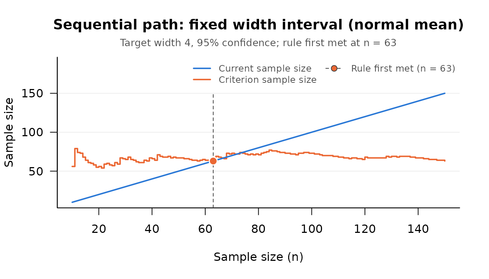

Special Cases and Simulation Verification
Source:vignettes/special-cases-and-simulation.Rmd
special-cases-and-simulation.RmdThis vignette places the procedures of the package beside one
another: the one stopping rule behind the accuracy in parameter
estimation (AIPE) family, the fixed sample size planners in
DMAR that answer the same question when a population value
can be supposed, two simulations that show where the asymptotic
guarantee holds and where it does not, the classical procedures with
what each one guarantees, and the budget constrained procedure.
One Stopping Rule, Many Effect Sizes
Kelley, Darku, and Chattopadhyay (2018) define a general family of effect sizes, the ratio of two parameters that are each a function of one or more other parameters (their Equation 1), estimated by the same ratio with U-statistics in place of the parameters (their Equation 4), and they give one sequential procedure for the whole family. Write ω for the target full width of the confidence interval, z for the standard normal quantile of the confidence level (1.96 at 0.95), and Vn2 for the estimate, computed from the first n observations, of the asymptotic variance ξ2 of √n times the estimator. Sampling begins with a pilot sample of the larger of m0 and 2z/ω (rounded up) observations (their Equation 21; m0 is 4 by default in the package) and stops at the first n with
n ≥ (2z / ω)2 (Vn2 + 1 / n)
(their Equation 22). The interval reported there is the estimate plus and minus z Vn / √n (their Equation 23). The term 1 / n keeps the rule from being met too early on a variance estimate that happens to be small. What changes from one effect size to the next is the estimator and its variance estimate; the pilot rule, the stopping rule, and the form of the interval do not. Neither does the guarantee: the interval at the stopping point is never wider than ω, and its coverage approaches the confidence level as ω shrinks (their Theorem 2). At a wide target the coverage can fall well short, as a later section shows.
| Effect size | Function | Sequential procedure | Fixed sample size planner in DMAR
|
|---|---|---|---|
| Standardized mean difference | seq_aipe_smd() |
Kelley, Darku, & Chattopadhyay (2018, Example 1) | ss_aipe_smd() |
| Coefficient of variation | seq_aipe_cv() |
2018, Example 2 | ss_aipe_cv() |
| Standardized mean | seq_aipe_sm() |
2018, Example 3 | ss_aipe_sm() |
| Slope of a simple linear regression | seq_aipe_reg_coef() |
2018, Example 4 | ss_aipe_reg_coef() |
| Contrast of group means | seq_aipe_c() |
2018, Example 6 | ss_aipe_c() |
| Pearson correlation | seq_aipe_r(method = "pearson") |
Kelley, Darku, & Chattopadhyay (2019) | ss_aipe_r() |
| Kendall’s τ and Spearman’s ρ |
seq_aipe_r(method = "kendall"),
seq_aipe_r(method = "spearman")
|
2019 | None |
| Gini index | seq_aipe_gini() |
Chattopadhyay & De (2016) | None |
| Squared multiple correlation | seq_aipe_R2() |
2019 | ss_aipe_R2() |
The first five rows are among the 2018 article’s examples of members
of the family; it works three of them through in detail (the
standardized mean difference, the coefficient of variation, and the
regression slope). The correlation coefficients are treated in the 2019
article with a rule of the same form. The Gini index procedure is that
of Chattopadhyay and De (2016), whose rule also has this form once their
half width is written as ω / 2; the 2018 article cites it and contains
no Gini index procedure of its own. The squared multiple correlation is
the exception in the table. Its interval rests on the normal theory
variance of the sample squared multiple correlation, so it assumes
multivariate normal data, and it has a stopping rule of its own (see
?seq_aipe_R2).
The family of the 2018 article is wider than the table. Cliff’s delta
for ordinal data (their Example 5) and single parameters such as a mean,
a variance, or Gini’s mean difference (their Example 7) belong to it and
have no seq_aipe_*() function here (DMAR plans
a fixed sample size for Cliff’s delta with
ss_aipe_cliff_delta()). A mean is covered by one of the
classical functions described below: seq_fwd_dfr_mean()
applies the rule above with the sample variance as
Vn2 and ω equal to twice its
half width d.
set.seed(113)
scores <- rnorm(150, mean = 70, sd = 8) # simulated scores, used again below
d <- 2 # half width, so the full width is 4
check <- seq_fwd_dfr_mean(scores[1:40], d = d)
z <- qnorm(0.975)
c(package = attr(check, "criterion_n"),
equation_22 = ceiling((2 * z / (2 * d))^2 * (var(scores[1:40]) + 1 / 40)))
#> package equation_22
#> 66 66seq_budget() (Chattopadhyay, Bandyopadhyay, Kelley,
& Padalunkal, 2025) is a companion to this family and not a member
of it: it ends when a fixed budget has been spent as well as the data
allow, not when an interval reaches a target width. The last section
returns to it.
Fixed Sample Size Counterparts in DMAR
When a value of the population effect size can be supposed in
advance, the sample size can be fixed in advance, and that is what the
ss_aipe_*() functions of DMAR do. The table
above names the counterpart of each sequential function; the rank
correlations and the Gini index have none. The two kinds of function
take different inputs.
-
DMAR::ss_aipe_smd(delta, conf_level = 0.95, width, assurance = NULL)takes a supposed population valuedeltaand returns the sample size per group at which the expected width of the confidence interval is no more thanwidth(withassurance, the size at which the realized width is no more thanwidthwith that probability). It needs no data. -
seq_aipe_smd(group_1, group_2, width, conf_level = 0.95)takes the data collected so far and reports whether the stopping rule is met. It needs no supposed value, and the final sample size is not known until sampling ends.
The DMAR planners rest on normal theory intervals (for
the correlation, the Fisher z interval), while the sequential
procedures, the squared multiple correlation aside, estimate the
variance without assuming a distribution, so the two do not plan for the
identical interval. They answer the same design question under different
assumptions.
How much the supposed value matters depends on the effect size.
plan_smd <- function(delta) {
plan <- DMAR::ss_aipe_smd(delta = delta, width = 0.4)
plan$value[plan$term == "necessary_n_per_group"]
}
plan_r <- function(rho) {
plan <- DMAR::ss_aipe_r(rho = rho, width = 0.2)
plan$value[plan$term == "necessary_N"]
}
supposed <- c(0.2, 0.5, 0.8)
plans <- data.frame(supposed_value = supposed,
smd_n_per_group = sapply(supposed, plan_smd),
correlation_n_pairs = sapply(supposed, plan_r))
plans
#> supposed_value smd_n_per_group correlation_n_pairs
#> 1 0.2 194 355
#> 2 0.5 199 219
#> 3 0.8 208 56For a standardized mean difference and a width of 0.4, the plan moves from 194 to 208 per group as the supposed value goes from 0.2 to 0.8. For a correlation and a width of 0.2, it moves from 355 pairs to 56: a researcher who supposes 0.5 when the population value is 0.2 plans 219 pairs where 355 are needed, and the interval comes out wider than planned. A sequential procedure removes the supposed value. The price is a sample size that is not known in advance and, as the simulations below show, a confidence level that can be trusted only when the target is narrow enough for the true value.
The case for planning a sample size for a narrow confidence interval, and not for statistical power alone, is made in Kelley and Maxwell (2003), Kelley and Rausch (2006), and Maxwell, Kelley, and Rausch (2008). The sequential procedures of this package are developed in Chattopadhyay and Kelley (2016, 2017), Kelley, Darku, and Chattopadhyay (2018, 2019), and Chattopadhyay, Bandyopadhyay, Kelley, and Padalunkal (2025).
A Simulation Check: The Standardized Mean Difference
Each seq_aipe_*() check function has a
_sensitivity companion that runs the whole procedure many
times against a population whose effect size is known (for the
correlation, the companion studies the Pearson coefficient). For a true
standardized mean difference of 0.5 and a target width of 0.4, in a
study that can check the rule only after every 10 participants per
group:
smd_sim <- seq_aipe_smd_sensitivity(true_value = 0.5, width = 0.4,
G = 200, seed = 113, batch = 10)
smd_sim
#> term value
#> true_value 0.5
#> target_width 0.4
#> conf_level 0.95
#> replications 200
#> mean_n 203.6
#> median_n 200
#> sd_n 6.652917
#> mean_width 0.3946013
#> median_width 0.3945118
#> pct_width_within 100
#> coverage 0.935
#> pct_hit_max_n 0
#> pct_variance_unusable 0The width guarantee holds by construction:
pct_width_within is 100, so no final interval was wider
than the target. The mean final sample size was 203.6 per group. If the
population value were known to be 0.5,
DMAR::ss_aipe_smd(delta = 0.5, width = 0.4) would plan 199
per group. The sequential procedure, which is told nothing about the
population value, ended 4.6 per group above that on average. That is
what checking only after every 10 costs, about half a batch: checked
after every observation (batch = 1, the default), the same
design ended at a mean of 199.1 per group in the replications reported
in the Details of ?seq_aipe_smd_sensitivity.
The final interval contained the true value in 93.5 percent of the
200 replications. The Monte Carlo standard error of that proportion is
1.7 percentage points, so a simulation of this size detects a gross
failure and nothing finer: it cannot tell a coverage of 0.95 from one of
0.93. A planning result that will be reported deserves many more
replications. In 4,700 to 6,000 replications of this design at each of
four batch sizes, coverage was between 0.949 and 0.952 (the same
Details, ?seq_aipe_smd_sensitivity).
A Cautionary Simulation: The Pearson Correlation at a Wide Target
The same check for the Pearson correlation, at a width chosen to be wide for the true value, shows what the asymptotic guarantee does not promise.
r_sim <- seq_aipe_r_sensitivity(true_value = 0.5, width = 0.5,
G = 200, seed = 113)
r_sim
#> term value
#> true_value 0.5
#> target_width 0.5
#> conf_level 0.95
#> replications 200
#> mean_n 26.42
#> median_n 21
#> sd_n 15.13336
#> mean_width 0.377283
#> median_width 0.4418572
#> pct_width_within 100
#> coverage 0.67
#> pct_hit_max_n 0
#> pct_variance_unusable 38The pilot sample is 8 pairs. For bivariate normal data ξ2 is (1 − ρ2)2, so the sample size the rule aims at, (2z / ω)2 ξ2, is 34.6 pairs. The procedure stopped at a mean of 26.4. Every final interval was within the target width, and only 67 percent of them contained the true correlation (Monte Carlo standard error 3 percentage points), where 95 percent was asked for.
Kelley, Darku, and Chattopadhyay (2019) report this behavior and trace it in their Appendix D: the variance estimate is built from ratios of unbiased moment estimates, a ratio of unbiased estimates is not itself unbiased, and in small samples the variance tends to be underestimated. The rule is then met too early, and the interval keeps its width without keeping its coverage.
The row pct_variance_unusable shows a second symptom. In
38 percent of the replications the variance estimate was zero or
negative at one or more checks. A check of that kind has estimated no
variance, and the package reports its stopping rule as not met, with the
attribute variance_unusable set to TRUE and a
printed note (see “An Unusable Variance Estimate” in
help("SMSD-package")). That is a deliberate departure from
the stopping rule as printed, which would stop at once with an interval
far narrower than the data support. Sampling past such a check helps,
but the estimate on which a study finally stops can still be too
small.
The remedies are a narrower target, a larger minimum pilot sample, or both.
r_sim_40 <- seq_aipe_r_sensitivity(true_value = 0.5, width = 0.5,
G = 200, seed = 113, m_0 = 40)
r_sim_40[r_sim_40$term %in% c("mean_n", "coverage", "pct_variance_unusable"), ]
#> term value
#> mean_n 43.355
#> coverage 0.9
#> pct_variance_unusable 0With at least 40 pairs before the first check, coverage in these replications rose to 90 percent (standard error 2 percentage points), at a mean of 43.4 pairs. That is better and still short of 95.
Coverage is not a property of the width alone. It depends on the true
value as well, because a strong relationship is estimated with so little
sampling error that the rule is met in a small sample at a width that
would be narrow for a moderate one. The measured values in the Details
of ?seq_aipe_r_sensitivity (95 percent intervals, default
pilot, normal data unless stated, at least 800 replications per
condition) show the pattern across the family. The sample size
n counts pairs for the correlation and the slope, observations
for the coefficient of variation, and participants per group for the
standardized mean difference.
| Effect size and true value | Width | Mean final n | Coverage |
|---|---|---|---|
| Correlation, 0.4 | 0.4 | 55 | 0.78 |
| Correlation, 0.4 | 0.1 | 1,079 | 0.95 |
| Correlation, 0.9 | 0.1 | 75 | 0.45 |
| Correlation, 0.9 | 0.025 | 819 | 0.90 |
| Regression slope, 0.5 | 0.4 | 80 | 0.83 |
| Regression slope, 2 | 0.2 | 217 | 0.61 |
| Coefficient of variation, 0.5, lognormal data | 0.2 | 62 | 0.79 |
| Coefficient of variation, 0.5, lognormal data | 0.05 | 1,561 | 0.90 |
| Standardized mean difference, 0.5 | 0.4 | 199 | 0.95 |
The squared multiple correlation behaves the same way, and worse with
many predictors. With five predictors, multivariate normal data, and a
population value of 0.50, coverage of its default interval was 0.851 at
a width of 0.30, 0.912 at 0.20, 0.936 at 0.10, and 0.949 at 0.05. It
falls much further when the number of predictors is not small beside the
sample size that the width calls for: for the same population value,
coverage was 0.865 with 10 predictors and 0.790 with 15 at a width of
0.20, and 0.668 with 10 and 0.361 with 15 at a width of 0.30. (All of
these are from 10,000 replications per condition, reported in
?seq_aipe_R2.) The sample value overestimates the
population value by more as predictors are added, the interval is built
around it, and the stopping rule does not correct for it. The interval
rests on normal theory besides, and is too narrow for heavy tailed data
however large the sample.
Before relying on an interval at a planned width, run the sensitivity
function at every true value that is plausible for the study, the
strongest included, and read its coverage row.
vignette("sensitivity-analysis", package = "SMSD") works
through such an analysis.
The Classical Procedures
The fixed width (seq_fwd_*, ts_fwd_*),
bounded length (seq_blci_*), bounded risk
(seq_br_*, ts_br_*), and minimum risk
(seq_mr_* for a mean or a location) functions implement
procedures for a mean, a median, or the location of a negative
exponential distribution that are treated in Mukhopadhyay and de Silva
(2009). They are the older relatives of the procedures above. The two
stage fixed width interval is Stein’s (1945), and it is exact for normal
data; Chow and Robbins (1965) gave the asymptotic theory of purely
sequential fixed width intervals for a mean. Minimum risk point
estimation, in which the cost of sampling is set against the cost of
estimation error, is credited by Mukhopadhyay and de Silva (2009,
Section 6.4) to Robbins (1959).
Stein’s Two Stage Procedure and the Purely Sequential Rule
A training director wants the mean score on a 100 point skills assessment to within 2 points, with 95 percent confidence. If the standard deviation were known to be 8, the sample size would be known too.
n_known <- seq_fwd_norm_mean_optimal(variance = 8^2, d = d)
n_known
#> [1] 62The standard deviation is not known. Stein’s two stage procedure estimates the variance once, from a first stage, and that estimate fixes the total sample size. Here the 150 simulated scores from above (mean 70, standard deviation 8) stand for the trainees in the order they are assessed.
m <- ts_fwd_norm_mean_pilot(d = d)
first_stage <- scores[1:m]
stein <- ts_fwd_norm_mean(first_stage, d = d)
total_n <- attr(stein, "criterion_n")
c(first_stage = m, total = total_n)
#> first_stage total
#> 10 75
ts_fwd_norm_mean(first_stage, scores[(m + 1):total_n], d = d)
#> Sequential check (two stage fixed width interval (normal mean))
#>
#> Current n : 75
#> Criterion n : 75
#> Target width : 4
#> Confidence level: 95%
#>
#> lower_limit : 68.66762
#> mean : 70.66762
#> upper_limit : 72.66762
#> optimal_n : 75
#> current_n : 75
#>
#> Stopping rule met: TRUEThe purely sequential rule estimates the variance again after every
observation and stops the first time the sample size reaches what the
current estimate calls for. seq_path() applies it to the
same scores, starting at the pilot sample size, and
seq_report() words the result.
path <- seq_path(seq_fwd_norm_mean, scores, d = d)
attr(path, "stop_n")
#> [1] 63
plot(path, which = "criterion")
seq_report(path)
#> Sample size was determined with the sequential fixed width confidence
#> interval procedure for the mean of a normal distribution (Mukhopadhyay
#> & de Silva, 2009), with a target full width of 4 for the 95% confidence
#> interval. The stopping rule was evaluated from the pilot sample size (n
#> = 10) onward, after each additional observation, and was first met at n
#> = 63. At that sample size the estimate of the mean was 71.618, 95% CI
#> [69.618, 73.618].
#>
#> Reference
#> Mukhopadhyay, N., & de Silva, B. M. (2009). Sequential methods and
#> their applications. Chapman & Hall/CRC. ISBN:9780367386535In this run the purely sequential rule stopped at 63 observations,
next to the 62 that a known variance would allow, and Stein’s procedure
asked for 75. The difference is not an accident of the sample. Stein’s
procedure pays for estimating the variance from the first stage alone
through a t quantile on m − 1 degrees of freedom in
place of the normal quantile, so its expected total sample size is about
t2 / z2 times the known variance
sample size: 1.33 for the first stage of 10 used here, 1.09 for a first
stage of 30, and 42 for a first stage of 2, which is why
ts_fwd_norm_mean_pilot() does not return a very small
one.
What the extra observations buy is the guarantee. For normal data Stein’s interval covers the mean with probability at least the confidence level for every mean, every variance, every half width, and every first stage of two or more observations. The purely sequential rule reaches the confidence level only in the limit as the half width shrinks; with about 61 observations needed, as here, its coverage in simulation was 0.938 (the first row of the second table below). One procedure gives an exact guarantee at the price of a larger sample; the other gives a sample close to the known variance one at the price of a guarantee that is only approximate.
What Each Classical Procedure Guarantees
The two stage procedures take the first stage in
pilot_data and the second in additional_data;
the first stage alone fixes the total sample size, which is the row
optimal_n. In the table m is the first stage size
and n* the sample size that would be used if the unknown
variance, scale, or mean were known.
| Function | Target | Guarantee | Price or shortfall |
|---|---|---|---|
ts_fwd_norm_mean() |
Interval of half width d for a normal mean (Stein,
1945) |
Exact: coverage at least the confidence level for normal data, for any m of 2 or more | Expected total about t2 / z2 times n*: 1.33 at the default m of 10 |
ts_fwd_nexp_mean() |
Interval of full width d for the location of a negative
exponential distribution |
Exact for negative exponential data, for any m of 2 or more | Expected total about 1.19 times n* at the default m of 10 |
ts_br_norm_mean() |
Risk of the mean at most w for normal data |
Exact for normal data, for any m of at least k
+ 2 |
For squared error, expected total about (m − 1) / (m − 3) times n*: 1.29 at the default m of 10 |
ts_br_exp_mean() |
Risk of the mean at most w for exponential data |
Computed, not proved: in exact calculation for m from 3 to 100 and n* from 1 to 2,000 the risk was at most 0.990 of the bound | Expected total about 1.46 times n* at the default m of 20, and 9.04 times at an m of 3 |
ts_fwd_dfr_mean() |
Interval of half width d for a mean, no distribution
assumed |
Asymptotic in m | Coverage at a nominal 0.95 with the default m of 30: for normal data it tends to 0.940 as the target narrows; in simulation with an n* of 384 and of 1,537 it was 0.915 and 0.917 for exponential data and 0.874 and 0.876 for lognormal data with skewness 4 |
ts_br_exp_mean() is the two stage procedure that
Mukhopadhyay and de Silva (2009, Sections 8.3.1 and 8.3.2, Equations
8.3.9, 8.3.11, and 8.3.13) attribute to Mukhopadhyay and Pepe (2006),
with the constant 0.565 that they attribute to Zacks and Mukhopadhyay
(2006). The distribution free two stage interval is the one to be
careful with. It treats the first stage variance as if it were the
population variance. Once the sample size needed is well beyond the
first stage, its coverage is therefore below the nominal level whatever
the first stage size: for normal data it tends, as the target narrows,
to the probability that a t variable on m − 1 degrees
of freedom lies within plus and minus z (0.918 at a nominal
0.95 for a first stage of 10, 0.940 for 30, 0.947 for 100), and it is
lower still for skewed data. Only when the first stage is already about
as large as the sample size needed, or larger, is the coverage at or
above the nominal level.
The purely sequential procedures take the observations so far in
x and are checked after each new observation or batch. All
of their guarantees are asymptotic: they hold in the limit as the
precision target tightens or the cost of an observation falls, so that
the sample size needed, n*, grows.
| Function | Target | Measured with the default pilot |
|---|---|---|
seq_fwd_norm_mean() |
Interval of half width d for a normal mean |
Coverage at a nominal 0.95: 0.933 at an n* of about 15, lowest (about 0.922) at 24 to 28, 0.938 at about 61, 0.949 at about 246 |
seq_fwd_dfr_mean() |
Interval of half width d for a mean, no distribution
assumed |
Normal data: 0.935, 0.942, and 0.948 at an n* of about 15, 61, and 246. Exponential data: lowest (about 0.855) at 40 to 61, 0.934 at about 246, 0.946 at about 983 |
seq_fwd_nexp_mean() |
Interval of full width d for the location of a negative
exponential distribution |
0.938 at an n* of about 15, lowest (about 0.930) at 25, 0.948 at about 240 |
seq_blci_dfr_median() |
Interval for a median between two order statistics, of length at
most 2 d
|
At a fixed sample size, at least the confidence level. As a sequential procedure at a nominal 0.95: 0.918 to 0.947 for normal, exponential, and Cauchy data with n* from 25 to 800; a check whose rule is met prints a note saying so |
seq_br_norm_mean() |
Risk of the mean at most w for normal data |
Squared error: risk 1.11 times the bound when the bound calls for 15 observations, highest (about 1.22 times) at 25 to 30, 1.05 times at 100, 1.01 times at 400 |
seq_mr_norm_mean() |
Minimum risk for a normal mean (Robbins, 1959) | Standard deviation of 1: risk 1.07, 1.06, 1.04, 1.01, and 1.00 times the minimum at an n* of 10, 15, 20, 50, and 100 |
seq_mr_exp_mean() |
Minimum risk for an exponential mean | Mean of 1: risk 1.08, 1.16, 1.15, 1.05, and 1.02 times the minimum at an n* of 10, 15, 20, 50, and 100 |
seq_mr_nexp_mean() |
Minimum risk for the location of a negative exponential distribution | Risk 1.00 to 1.03 times the minimum in ten of twelve conditions (n* from 18 to 387); 1.04 and 1.09 times in the other two (n* of 18 and 9) |
seq_mr_dfr_mean_arb() |
Minimum risk for a mean, no distribution assumed | Exponential data with n* of 25, 100, and 300: risk 1.02, 1.02, and 1.01 times the minimum |
The ratios in the first table are computed here from the formulas on
the help pages. Every simulated figure in the two tables is quoted from
the help page of the function, which gives the conditions in full
(40,000 or more simulated studies per condition for the purely
sequential procedures, 20,000 for ts_fwd_dfr_mean()). The
tables show two patterns. For the fixed width intervals for a mean or a
location and for the bounded risk procedure, the shortfall is largest
not at the widest targets but where the sample size needed is a few
times the pilot sample size: an early underestimate of the variance can
then end the sampling, and the pilot is too small a part of the sample
to protect against it. And skewness slows the approach to the nominal
level considerably, for the purely sequential distribution free interval
as for the two stage one.
Data with no variation are never reported as a stopping rule that is
met on the strength of a variance of zero. When every observation is
equal, or equal to ten significant digits, the seven purely sequential
functions that estimate a spread report the rule as not met and set the
attribute variance_unusable to TRUE, a
deliberate departure from the rules as printed, under which sampling
would stop at once. The four two stage functions that estimate a spread
stop with an error instead, because no second stage could change a total
sample size that the first stage alone determines. The median interval
estimates no variance: for it, heavily tied data can give an interval of
length zero, which meets the rule.
Each procedure has a pilot function, named with the suffix
_pilot. The classical pilots take the procedure’s own
arguments, then a minimum size m_0, then a tuning constant
gamma. For the two stage procedures the minimum matters
more than the rule, as the ratios for Stein’s procedure show. When the
population variance is known, seq_fwd_norm_mean_optimal()
gives the sample size for the fixed width interval directly.
Where the Budget Constrained Procedure Fits
The AIPE procedures stop when an interval is narrow enough, whatever
that costs. seq_budget() starts from the other end: the
total cost is fixed, the populations differ in what an observation
costs, and the question is how to divide the budget so that a contrast
of the population means is estimated as precisely as it can be. Luh and
Guo (2016) planned such a study with a fixed sample size, taking the
unknown variances from a separate pilot study; Chattopadhyay,
Bandyopadhyay, Kelley, and Padalunkal (2025) made the plan sequential,
so that it needs no advance values of the standard deviations and pays
for its pilot observations from the same budget.
For populations with contrast weights ci, standard deviations σi, and costs ai per observation, and a budget A0, the allocation that minimizes the variance of the contrast estimate (Theorem 1 of the article, its Equation 12) gives population i
ni0 = A0 |ci| σi / (√ai × Σl |cl| σl √al)
observations: more when its weight in the contrast is larger, when its scores vary more, and when it is cheaper to sample. Suppose a survey compares mean household spending in rural households with the average of metropolitan and suburban households, a completed rural interview costs 120, a metropolitan one 40, and a suburban one 60, and the three standard deviations are thought to be equal.
plan <- seq_budget_optimal(
contrast_weights = c(1, -0.5, -0.5),
sigmas = c(20, 20, 20),
cost_per_group = c(120, 40, 60),
budget = 30000
)
round(plan$n_per_group, 1)
#> [1] 152.2 131.8 107.6The rural group carries twice the weight of each of the others and,
at equal costs, would receive twice the observations. Because a rural
interview costs three times a metropolitan one, it receives 1.15 times
as many as the metropolitan group. The sequential procedure replaces the
supposed standard deviations with the sample standard deviations and
looks again after each observation;
vignette("seq-budget", package = "SMSD") works through it,
with the tests of noninferiority and equivalence that the article
develops.
The procedure assumes independent observations within each
population, at a known cost per observation. It fits comparisons of
groups, strata, or regions whose unit costs differ. It does not model
clustering: when observations are collected in clusters whose members
resemble one another, as in a multistage survey, the variance of the
contrast is not the one the allocation minimizes. Survey statisticians
have adaptive designs of their own, among them adaptive cluster sampling
(Thompson, 1990) and adaptive survey designs, in which sample units are
treated differently so as to get the best quality of response that the
costs allow (Schouten, Calinescu, & Luiten, 2013). Those adapt which
units are sampled or how they are approached; seq_budget()
adapts how many observations each population receives.
References
Chattopadhyay, B., Bandyopadhyay, T., Kelley, K., & Padalunkal, J. J. (2025). A sequential approach for noninferiority or equivalence of a linear contrast under cost constraints. Psychological Methods, 30(2), 425–439. doi:10.1037/met0000570
Chattopadhyay, B., & De, S. K. (2016). Estimation of Gini index within pre-specified error bound. Econometrics, 4(3), 30. doi:10.3390/econometrics4030030
Chattopadhyay, B., & Kelley, K. (2016). Estimation of the coefficient of variation with minimum risk: A sequential method for minimizing sampling error and study cost. Multivariate Behavioral Research, 51(5), 627–648. doi:10.1080/00273171.2016.1203279
Chattopadhyay, B., & Kelley, K. (2017). Estimating the standardized mean difference with minimum risk: Maximizing accuracy and minimizing cost with sequential estimation. Psychological Methods, 22(1), 94–113. doi:10.1037/met0000089
Chow, Y. S., & Robbins, H. (1965). On the asymptotic theory of fixed-width sequential confidence intervals for the mean. The Annals of Mathematical Statistics, 36(2), 457–462. doi:10.1214/aoms/1177700156
Kelley, K., Darku, F. B., & Chattopadhyay, B. (2018). Accuracy in parameter estimation for a general class of effect sizes: A sequential approach. Psychological Methods, 23(2), 226–243. doi:10.1037/met0000127
Kelley, K., Darku, F. B., & Chattopadhyay, B. (2019). Sequential accuracy in parameter estimation for population correlation coefficients. Psychological Methods, 24(4), 492–515. doi:10.1037/met0000203
Kelley, K., & Maxwell, S. E. (2003). Sample size for multiple regression: Obtaining regression coefficients that are accurate, not simply significant. Psychological Methods, 8(3), 305–321. doi:10.1037/1082-989X.8.3.305
Kelley, K., & Rausch, J. R. (2006). Sample size planning for the standardized mean difference: Accuracy in parameter estimation via narrow confidence intervals. Psychological Methods, 11(4), 363–385. doi:10.1037/1082-989X.11.4.363
Luh, W. M., & Guo, J. H. (2016). Sample size planning for the noninferiority or equivalence of a linear contrast with cost considerations. Psychological Methods, 21(1), 13–34. doi:10.1037/met0000039
Maxwell, S. E., Kelley, K., & Rausch, J. R. (2008). Sample size planning for statistical power and accuracy in parameter estimation. Annual Review of Psychology, 59, 537–563. doi:10.1146/annurev.psych.59.103006.093735
Mukhopadhyay, N., & de Silva, B. M. (2009). Sequential methods and their applications. Chapman & Hall/CRC. ISBN:9780367386535
Mukhopadhyay, N., & Pepe, W. (2006). Exact bounded risk estimation when the terminal sample size and estimator are dependent: The exponential case. Sequential Analysis, 25(1), 85–101. doi:10.1080/07474940500452254 (As described in Mukhopadhyay and de Silva, 2009, Section 8.3.1, Equations 8.3.9 and 8.3.11.)
Robbins, H. (1959). Sequential estimation of the mean of a normal population. In U. Grenander (Ed.), Probability and statistics: The Harald Cramér volume (pp. 235–245). Almqvist & Wiksell.
Schouten, B., Calinescu, M., & Luiten, A. (2013). Optimizing quality of response through adaptive survey designs. Survey Methodology, 39(1), 29–58.
Stein, C. (1945). A two-sample test for a linear hypothesis whose power is independent of the variance. The Annals of Mathematical Statistics, 16(3), 243–258. doi:10.1214/aoms/1177731088
Thompson, S. K. (1990). Adaptive cluster sampling. Journal of the American Statistical Association, 85(412), 1050–1059. doi:10.1080/01621459.1990.10474975
Zacks, S., & Mukhopadhyay, N. (2006). Bounded risk estimation of the exponential parameter in a two-stage sampling. Sequential Analysis, 25(4), 437–452. doi:10.1080/07474940600934896 (As described in Mukhopadhyay and de Silva, 2009, Section 8.3.2, Equation 8.3.13.)